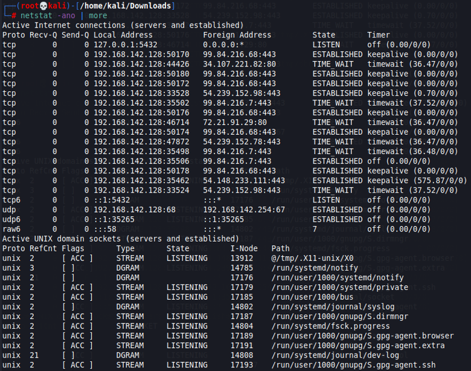

UNIX
UNIX Boot Process
Boot Phases
- BIOS - executes MBR
- MBR - executes GRUB
- GRUB - Grand Unified Boot Loader executes Kernel
- Kernel - executes /sbin/init
- Init - executes runlevel programs
- Runlevel - executed from /etc/rc.d/rc*.d
- Runlevel 3 by default
Run Levels
- /etc/inittab – Contains descriptions of the different run states the system can assume
- 0 – Halt (turns off the device)
- 1 – Single-user mode (terminal; no networking)
- 2 – Multi-user mode (no networking)
- 3 – Multi-user mode (with networking) (normal system operation without GUI)
- 4 – Unused/user-definable
- 5 – Full Multi-user mode (normal system operation with networking and GUI, standard runlevel)
- 6 – Reboot (reboots the device)
Boot Process Details
|
BIOS Phase (Basic Input/Output System) |
|
|
MBR (Master Boot Record) |
|
|
GRUB (Grand Unified Bootloader) |
|
| Kernel |
|
|
Init |
|
| Run-level |
|
Back to Categories
UNIX Logs
- DNS Resolver File: /etc/resolv.conf
- Logs are stored by default in /var/log/
- /var/log/messages – generic system activity.
- /var/log/auth.log – authentication related events; anything involving user authentication.
- /var/log/secure – used in place of /var/log/auth.log in RedHat/CentOS systems.
- /var/log/boot.log – system initialization script (/etc/init.d/bootmisc.sh) sends all bootup messages here.
- /var/log/mail.log – mail server related logs.
- /var/log/faillog – includes information on failed login attempts.
- /var/log/cron.log – records information on cron jobs.
- /var/log/kern.log : Kernel logs.
Back to Categories
UNIX Commands:
- ls – Lists directory contents
- -a - all
- -A - almost all
- --hide=[pattern] - does not list implied entries matching the pattern
- -i -inode (index number)
- -l -long listing format (includes permissions, group, owner, size, date, time)
- -R -recursive listing
- -r -reverse ordered sorting
- ps – reports a snapshot of current processes
- -eF -standard syntax to see every process
- aux -every process in BSD syntax
- -eLf -information about threads
- grep – Searches for patterns in each file specified.
- -v - Inverts match (select non-matching lines; essentially omits specified)
- -e - Enables regular expression (similar to egrep)
- -f - File specifier
- -i - Ignore case (case-insensitive)
- -w - Word; selects only lines containing matches that form whole words
- -c - Suppresses output; only outputs a count of matching lines
- iptables – administration tool for IPv4 packet filtering and NAT (think: access control; INPUT/FORWARD/OUTPUT | ACCEPT/REJECT/DROP)
- ~Using this tool, you can set up, maintain, and inspect the tables of IP packet filter rules in the Linux kernel.
- Note: if ‘!’ is used, it implies the inverse of the statement. If ‘+’ is used at the end of something, it will match anything that comes before the ‘+’.
- -A -‘Append’
- -L - List rules added in verbose format.
- -F -‘Flush’ the selected chain (or all if none are specified)
- -i -Specifies the interface
- -j -Jump target; specifies the target of the rule
- Example of basic syntax: [sudo(if not root or equiv.]) iptables [option(s)] CHAIN_rule [-j target]
- Example of usage: sudo iptables -A INPUT -i lo -j ACCEPT -> This would append (-A) a line to the INPUT table saying that anything from the localhost (indicated by -i (interface) lo (localhost)).
- ifconfig – Used to configure the kernel-resident network interfaces. Used at boot time to set up
- If no args are given, ifconfig displays status of currently active devices.
- up/down - Flags cause the interface to be activated or shut down.
- (rest is fairly self-explanatory); deprecated tool, modern systems use ip more often.
- ip – Show/manipulate routing, devices, poly routing and tunnels.
Key Flags of note: - addr - Specifies the IP address on a device
- route - Routing table entry
- up/down - Change state to UP or DOWN.
- mtu - Change the MTU of the device. (Maximum Transmission Unit (default 1500))
- alias - Gives a device a symbolic name for easy reference.
- traceroute – Print the route packets trace to network host. (tracks the route taken from an IP network to a given host.)
- -I - Use ICMP (that’s a capital ‘i’) ECHO for probe.
- -T - Use TCP SYN for probe.
- -i - Specify interface through which traceroute should send packets.
- -m - Max TTL
- -n - Do not map IP addresses to host names.
- -s - Choose an alternative source address. (must be one of the interfaces.)
- netstat – Prints network connections, routing tables, interface statistics, masquerade connections, and multicast memberships.
- -a - Active connections; prints both listening and non-listening sockets.
- With the –interfaces option, shows interfaces that are not marked.
- -v - Verbose output
- -n - Show numerical addresses instead of trying to determine symbolic host/port/user names.
- -o - Includes information related to networking timers.
- -l - Shows only listening sockets
- Example of common usages:
netstat -ano displays: protocol, rec/send count, local address, foreign address, connection state, and network timers.
Back to Categories
UNIX Miscellaneous
Shared Object
UNIX equivalent to Windows’ Dynamic Link Library (DLL). File intended to be shared by executable files and further shared object files./etc/shadow file
Password hashes for each user that has logged onto the machine/etc/passwd file
Name: password (stored in /etc/shadow) : user id : group id : commentaryExample: jsmith:x:1001:1000:Joe Smith, room 1007
(the ‘x’ field is where the password hash will show up in /etc/shadow)
.bashrc:
/Users/[user]/.bashrc – File that contains shell commands that is used to change prompts, set environment variables, and define shell procedures.Bash reads and executes commands from ~/.bashrc
crontab
On Unix-like operating systems, the crontab command opens the cron table for editing. The cron table is the list of tasks scheduled to run at regular time intervals on the system.crontab [-u user] file
Back to Categories